VEDANT SINGH
Results-driven Data Analyst with Python, SQL, and Power BI skills, proven by 5-star HackerRank ratings and internships. Passionate about translating complex data into actionable insights; seeking a Data Analyst/scientist role to drive impact.
🛠️ Core Skills
Languages
SQL, Python
Data Analysis & Tools
Pandas, NumPy, Power BI, MySQL, Jupyter Notebook, VS Code
Machine Learning
Collaborative Filtering, Data Preprocessing, Feature Engineering
Soft Skills
Communication, Teamwork, Problem Solving, Adaptability
💼 Work Experience
Aivariant - Data Science Intern
(Apr 2025 - July 2025)- Developed Python-based Resume Classifier, extracting text from .doc/.docx/.pdf for automated sorting.
- Applied NLP & TF-IDF (spaCy, scikit-learn) to vectorize resume text into ML features.
- Applied full DS workflow: data acquisition, cleaning, feature engineering, ML development, evaluation.
Aivariant - Data Science Intern
(Jan 2025 - Apr 2025)- Developed and deployed a customer segmentation and prediction dashboard using Python and Streamlit.
- Implemented Random Forest classifier (80%+ accuracy) and KMeans, Agglomerative, GMM, DBSCAN clustering models.
- Built a Streamlit dashboard with six interactive filters for demographics and clustering parameters.
Seconds Digits Solutions - Data Analytics Intern
(Jan 2023 to Jul 2023)- Conducted data cleaning and preprocessing using Python to ensure data accuracy and consistency.
- Leveraged SQL for data extraction, transformation, and analysis, generating reports on trends and patterns.
- Communicated findings and insights to internal teams, influencing decision-making processes.
📸 Project Showcase
 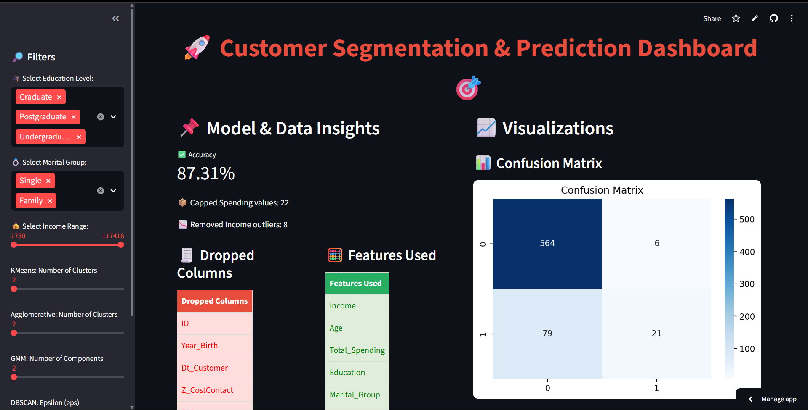
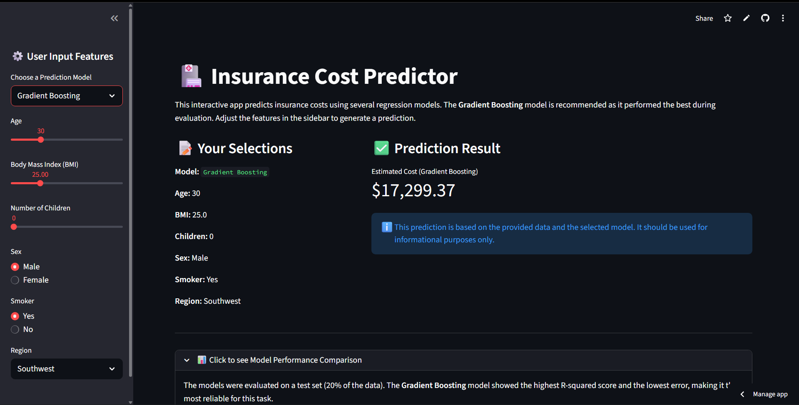
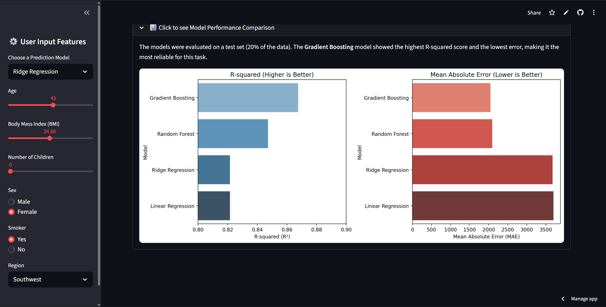
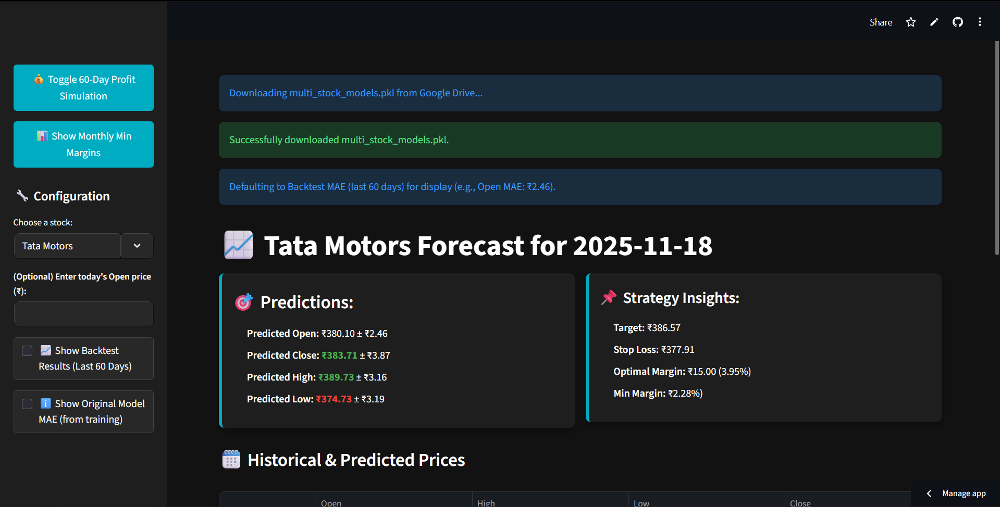
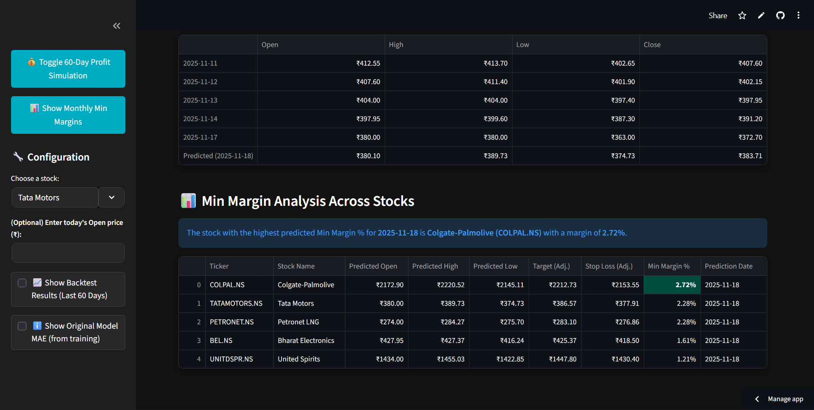
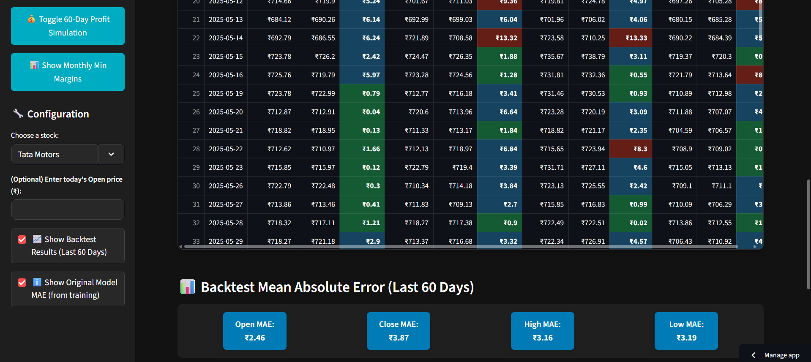
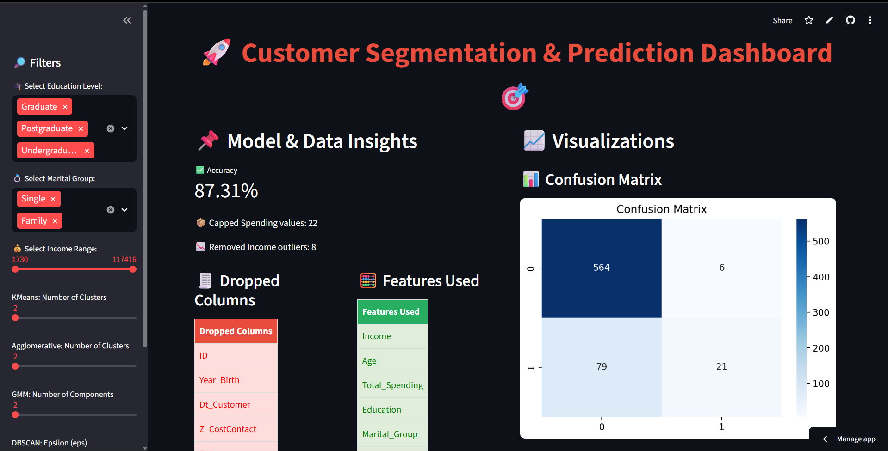
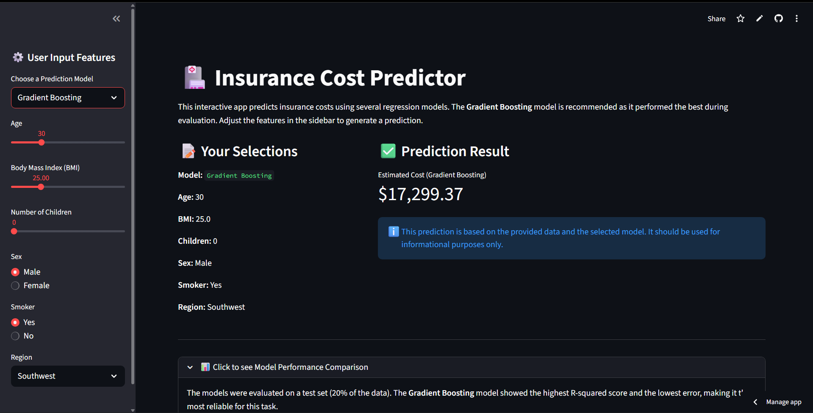
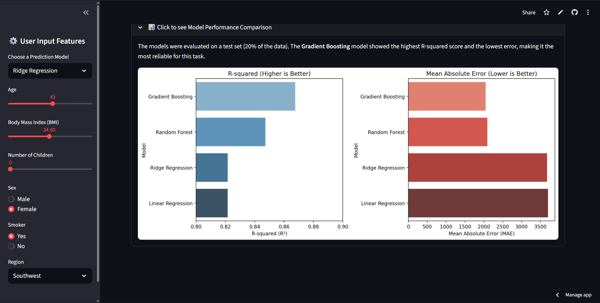
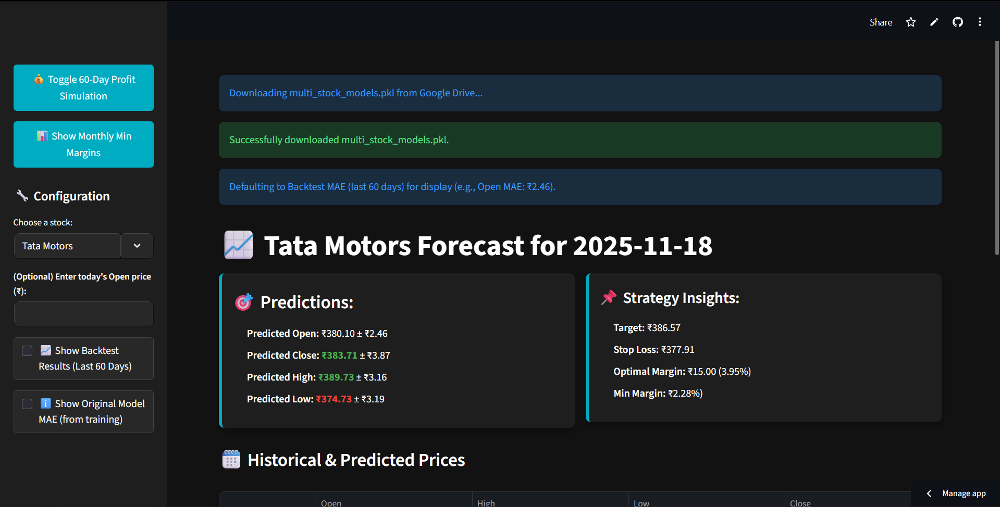
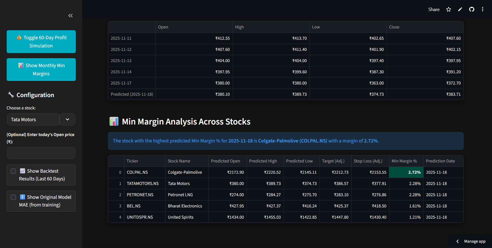
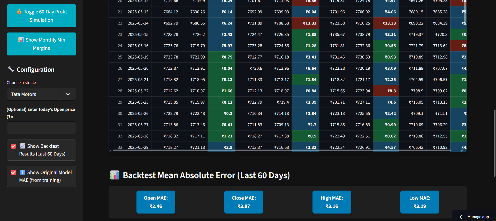


💡 Key Projects
Housing Price Prediction Model
Engineered model with LightGBM on Kaggle data, applied feature engineering (e.g. house_age, renovation), optimized via Randomized SearchCV (RMSE 66,361), and visualized insights in Power BI.
Twitter Sentiment Classification Pipeline
Engineered pipeline for Twitter data (~14.6K tweets) using NLTK, TF-IDF, and Logistic Regression (~80% accuracy).
🎓 Education & Training
B-TECH. (Computer Science and Engineering)
Shri Vaishnav Vidyapeeth Vishwavidyalaya, Indore (2019-2023)
7.5 CGPA
XII Standard (CBSE)
St. Joseph's Convent Senior Secondary School, Ratlam (2018)
79.6%
Certifications
- Google Advanced Data Analytics (2024)
- Google AI Essentials (2024)
- Excelr (Data Scientist/Analyst) (2025)